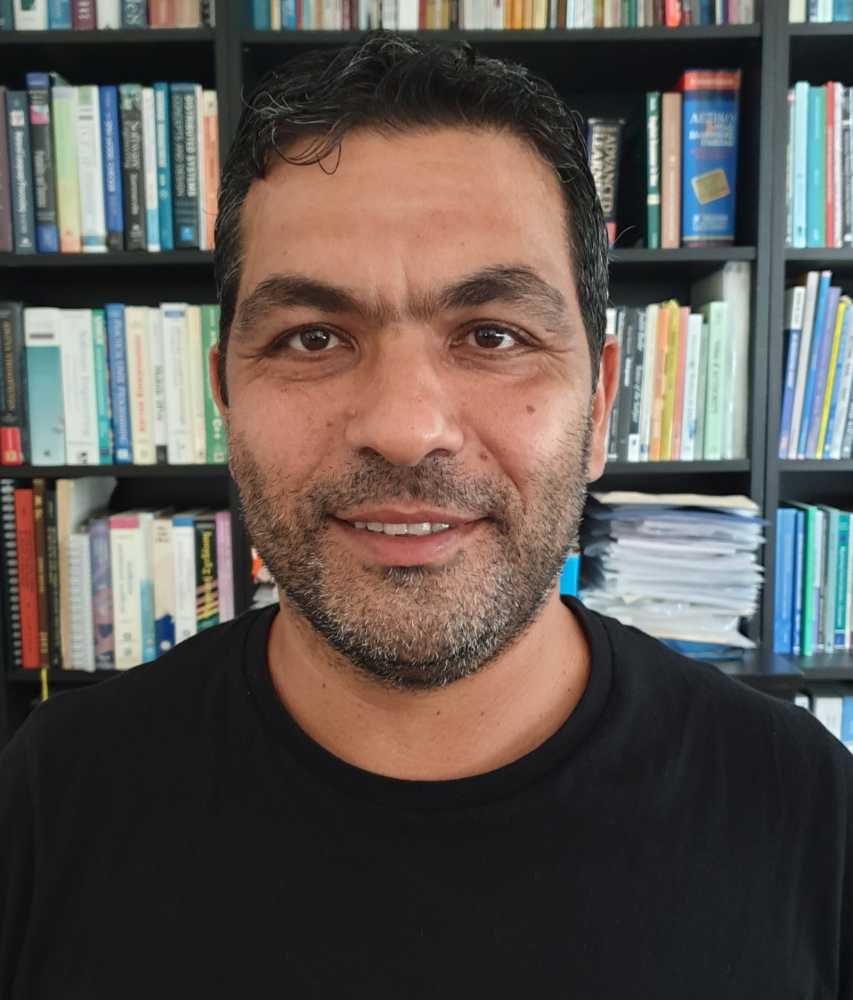

Christiana Tsaousi
Programme Coordinator, Lecturer in Consumer Culture
- PhD in Sociology of Consumption (University of Leicester).
- Taught at Bournemouth, Leicester, Coventry, Royal Holloway.
- Research on consumer culture and identity.
- Focuses on feminism, gender, fashion, media.
Anna Zarkada
Associate Professor
- PhD in Services Science (QUT, Australia).
- Taught across Europe, Asia, and Australia.
- 100+ academic publications and awards.
- Expert in corporate culture and sustainability.
Vasiliki Triga
Associate Professor
- PhD from European University Institute, Florence.
- Taught in Zurich, Paris, Thessaloniki.
- Research in political communication and referendums.
- Founder of DigiPols Research Lab.
Costas Djouvas

Associate Professor
- PhD from City University of New York, funded by NSF.
- Collaborated with MIT and Naval Research Lab.
- Research on Big Data and socio-cultural phenomena.
Yioula Melanthiou
Associate Professor
- PhD in Marketing (University of Manchester).
- Experience in teaching and doctoral supervision.
- Research in Social Media Marketing, Consumer Behaviour.
- Former Research Director in a multinational company.
Erasmia Leonidou
Lecturer
- DBA in Intercultural Communication.
- BA in History and Archaeology (University of Cyprus).
- 20+ publications in CSR, HRM, and Marketing.
Nikandros Ioannidis
Special Teaching Staff
- PhD from Pompeu Fabra University, Spain.
- Focus on political communication and technology.
- Publications in top international journals.
- Awarded by the President of Cyprus for excellence.
Maria Voutsa
Special Teaching Staff
- PhD in Advertising and Consumer Behavior (AUTH).
- Research in advertising effectiveness, digital media.
- Coordinator of AD.CUT student team.
- Publications in peer-reviewed journals (JCB, IJIMA).